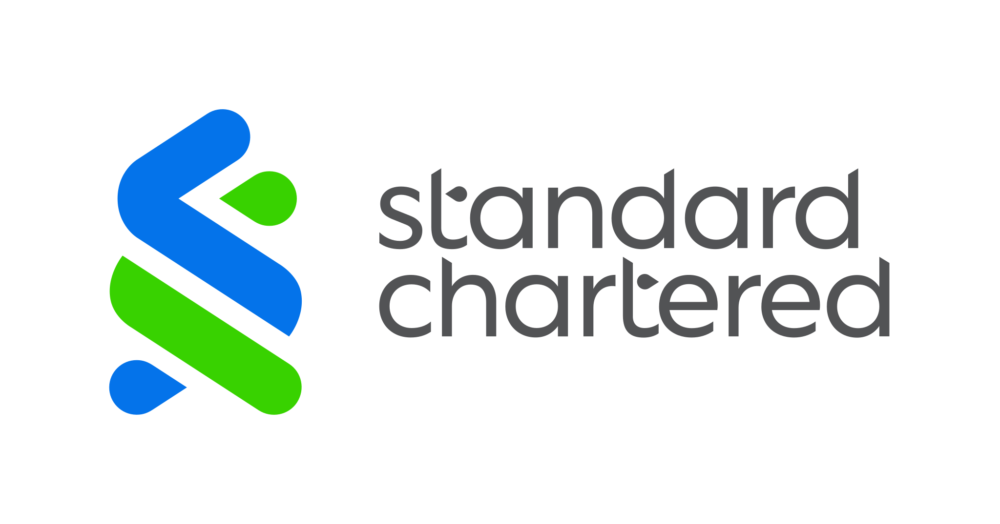

The Midlands Graduate School (MGS) provides an intensive course of lectures on the Mathematical Foundations of Computing. It has run annually since 1999, and is hosted by the Universities of Birmingham, Leicester, Nottingham, and Sheffield in rotation.
The lectures are aimed at PhD students, typically in their first or second year of study. However, the school is open to anyone who is interested in learning more about the mathematical foundations of computing, and in recent years has seen increased participation from industry. We also very much welcome students from abroad.
This is an in-person only event, and registration is now closed.
| Platinum Sponsor | ||
|  | Bronze Sponsor |
The following courses will be held this time:
Introductory Courses:
Advanced Courses:
- Domain theory and denotational semantics
Lecturer: Tom de Jong (University of Nottingham), TAs: Joshua Chen and Ayberk Tosun- Type theory
Lecturer: Thorsten Altenkirch (University of Nottingham)- Category theory
Lecturer: Nicolai Kraus (University of Nottingham), TAs: Tobias Schmude, Bruno da Rocha Paiva, and Stiéphen Pradal
- Computational models of higher categories
Lecturer: Jamie Vicary (University of Cambridge)- Homotopy type theory
Lecturer Eric Finster (University of Birmingham), TA: Jacob Neumann- String diagrams
Lecturer: Dan Marsden (University of Nottingham), TA: George Kaye- Algebraic semantics and verification
Lecturer: Georg Struth (University of Sheffield)- Effects and call-by-push-value
Lecturer: Paul Blain Levy (University of Birmingham)
| Sat | Sun | Mon | Tue | Wed (*) | Thu | |||||||
|---|---|---|---|---|---|---|---|---|---|---|---|---|
| 09:00-09:55 | Lectures | Domain (LT1) |
CMHC (LT1) |
Domain (LT1) |
Participant Talks (LC-UG05, LC-UG06, CS-LG23) |
Domain (LT1) |
||||||
| Exercise Classes |
CMHC (N224) |
|||||||||||
| 09:55-10:30 | Coffee Break (Sun-Tue, Thu: The Link, Wed: CS Lower Ground) |
|||||||||||
| 10:30-11:25 | Lectures | Type (LT1) |
Type (LT1) |
Type (LT1) |
Type (LT1) |
|||||||
| Exercise Classes |
HoTT (N224) |
ASV (N225) |
HoTT (N224) |
ASV (N225) |
HoTT (LC-UG05) |
ASV (LC-UG06) |
HoTT (N224) |
ASV (N225) |
||||
| 11:30-12:25 | Lectures | Category (LT1) |
Category (LT1) |
Category (LT1) |
Category (LT1) |
|||||||
| Exercise Classes |
SD (N224) |
CBPV (N225) |
SD (N224) |
CBPV (N225) |
SD (LC-UG05) |
CBPV (LC-UG06) |
SD (N224) |
CBPV (N225) |
||||
| 12:25-14:00 | Lunch (Sun-Tue: The Link, Wed: CS Lower Ground) |
|||||||||||
| 14:00-15:00 | Lectures | Domain (LT1) |
CMHC (LT1) |
CMHC (LT1) |
CMHC (Y3-G29) |
|||||||
| 15:00-15:30 | Coffee Break (Sun-Tue: The Link, Wed: CS Lower Ground) |
|||||||||||
| 15:30-16:25 | Lectures | HoTT (LT1) |
ASV (LT2) |
HoTT (LT1) |
ASV (LT2) |
HoTT (LT1) |
ASV (LT2) |
HoTT (Y3-G29) |
ASV (H-101) |
|||
| Exercise Classes |
Domain (N224) |
Type (N225) |
Domain (N224) |
Type (N225) |
Domain (N224) |
Type (N225) |
Domain (LC-UG05) |
Type (LC-UG06) |
||||
| 16:25-17:00 | Coffee Break (Sun-Tue: The Link, Wed: CS Lower Ground) |
|||||||||||
| 17:00-18:00 | Lectures | SD (LT1) |
CBPV (LT2) |
SD (LT1) |
CBPV (LT2) |
SD (LT1) |
CBPV (LT2) |
SD (Y3-G29) |
CBPV (H-101) |
|||
| Exercise Classes |
Category (N224) |
Category (N224) |
CMHC (N225) |
Category (N224) |
CMHC (N225) |
Category (LC-UG05) |
CMHC (LC-UG06) |
|||||
| Evening | Welcome Social (The Attic) 18:00 until late |
Conference Dinner (Pasta di Piazza) Arrive 19:00-19:30 |
Pizza & Drinks (CS Atrium) 18:00 until late |
|||||||||
On every day except Wednesday, things are straightforward: all events from 09:00-18:00 are held in the Gisbert Kapp Building (G8 on the Edbaston campus map). The rooms we will use are:
On Wednesday, we will be located around the School of Computer Science. The buildings and rooms we will use are:
There are three social events planned for the conference:
On Wednesday morning, nine of our attendees will give talks on their own research, or topics that have recently interested them. This year, we are happy to host the following talks:
| Session 1 (LC-UG05) | Session 2 (LC-UG06) | Session 3 (CS-LG23) | |
|---|---|---|---|
| Chair | Todd Ambridge | Tom de Jong | Eric Finster |
| Talk 1 (9-9:15) | Formalizing types with infinite support (Jan van Brügge) |
CUE -- a type system for an untyped world (Aram Hăvărneanu) |
A compositional theory of digital circuits (George Kaye) |
| Talk 2 (9:20-9:35) | On the metatheory of IRs and the CPS-calculus (Paulo Torrens) |
Structural Coends and Bisimulations (Jacob Neumann) |
Ladder Logic Verification for Railway Interlockings with the IC3 Algorithm (Harry Bryant) |
| Talk 3 (9:40-9:55) | Specifying QIITs using Containers (Stefania Damato) |
Frobenius structure in star-autonomous categories (Cédric de Lacroix) |
Tail recursion transformation for invertible first order functions (Joachim Tilsted Kristensen) |
Full abstracts will be announced on our Discord server.

MGS 2023 will be held in the Gisbert Kapp building on most days, and around the School of Computer Science on Wednesday.
Please be aware of rail strikes on Saturday 1st April (which have since been suspended). You may still need to plan accordingly, for example travelling by coach with National Express.
Conveniently located hotels include
| Level | Benefits | Contribution |
|---|---|---|
| Bronze |
|
£500 |
| Silver |
|
£1000 |
| Gold |
|
£2000 |
| Platinum |
|
£4000 |
Todd Ambridge Martin Escardo Eric Finster Jamie Hough Vincent Rahli
Anna Clee George Kaye Yi Miao Bruno da Rocha Paiva Tobias Schmude Yanrong Wang